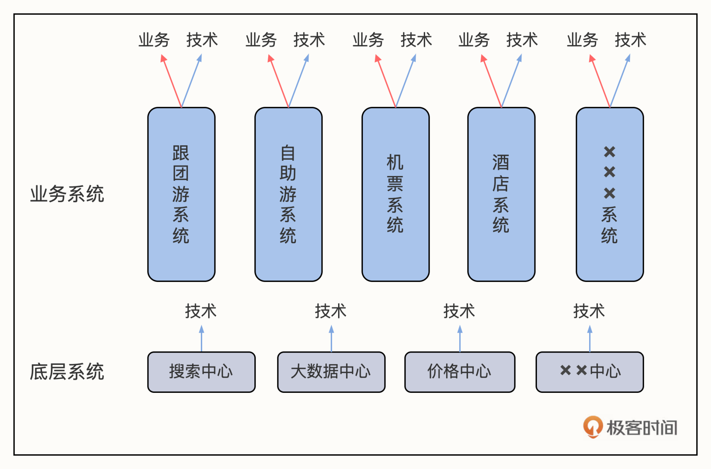

- 00 篇首语 认识汤峥嵘.md.html
- 01 看似理性的程序员为什么可能是最不讲理的？.md.html
- 02 个人性格影响“企业性格”，企业文化离不开人.md.html
- 03 闲话家常（一）：半工半读的留学生活.md.html
- 04 闲话家常（二）：匹兹堡 6 年与硅谷 4 年工作经历.md.html
- 05 从排斥到拥护，我眼中的阿里文化.md.html
- 06 怎样才能遇到自己的“贵人”？.md.html
- 07 选行业秘诀：技术是否能发挥重要作用？.md.html
- 08 途牛野蛮生长，也促使CTO“野蛮生长”.md.html
- 09 闲话家常（三）：纽约打工故事续集.md.html
- 10 管理的本质：如何把硬性政策柔性执行？.md.html
- 11 为什么建议技术团队的组织架构按系统划分？.md.html
- 12 技术、产品、业务三方关系？谁水平高听谁的.md.html
- 13 CTO 直接下属有 60 个总监，怎么管理？.md.html
- 14 无边界访谈：创业思考与高手视角.md.html
- 结束语 给技术人的一封信.md.html
- 捐赠
11 为什么建议技术团队的组织架构按系统划分？
极客时间：技术团队的组织架构建设话题，我一直很想聊，你了解的，技术组织架构的建设都有哪些常用方法？
汤峥嵘：其实技术团队的架构无非是以下几种方式。一种业务导向的团队架构。假设你的公司有国际业务和国内业务，每个业务给它分配一个技术团队，这种分类方式比较垂直。但它的缺点是，团队可能经常重复劳动。
第二种架构是统一的技术团队，全公司的需求汇总到一起，统一派工单。这种方式也非常常见，有很多公司在用。用这种方式的公司，说明它的 CTO 肯定是非常强势的，也许技术也是很强的，业务人员提完需求只能等着，要排队，具体排到什么时候他们也不知道。
这种方法我觉得更适合稳定一点的企业，因为对这些企业来说，不管业务人员提的需求做成了还是没做成，应该对业务影响都不是很大，所以才会用这种组织架构。
我比较喜欢用的架构是以上两种的组合。每个业务团队都配一个技术团队，但同时还有底层的技术团队。这里面的关键是，无论是业务团队还是底层技术团队，我要求每个团队都负责一个系统。拿途牛来说，我的组织上层有很多垂直的业务，比方说自助游、跟团游、机票、酒店等等，对应的就是自助游系统、跟团游系统、机票系统、酒店系统等等；底下还有几个共用的系统，比如说，搜索系统、价格系统、大数据中心，这些部门是要支撑全公司的。

极客时间：关于技术团队的组织架构话题，网上也有相关的各种讨论，除了刚刚说到的几种，是不是还有按项目划分的形式？你觉得技术组织的架构有一个标准答案吗？
汤峥嵘：我觉得技术组织的架构方法肯定是没有标准答案的。我的分配原则是，一个团队在做的事情要相对稳定，我不希望大家老是换来换去，因为这样没有办法积累经验。
无论是对商业、产品还是技术类的知识，你都要有一个系统化的积累过程，这样才能进步和成长。所以我比较反对项目制，因为短期的项目一般很快就结束了，团队散掉之后，你就没有地方去做沉淀了。除非你要去做一个十年的长项目，但这种项目老板一般又不会批准。
当然，并不是说完全不能做项目，但你得在系统稳定的时候做。系统是稳定的，项目是灵活的，这个没问题。比方说，企业底层的一大堆系统都已经比较稳定了，有一千个人都是固定的。这时候抽一百个人出来做项目，这是可以的。这就像搭积木一样，底层的积木先搭好，上面才能做一些变动。
为什么我喜欢用系统来划分团队呢？因为我觉得系统是边界，这个边界定义好了，后面才不容易出问题。这可能跟我干了这么多年架构师有关，架构师最重要的任务就是把系统稳定地切分好。这个叫订单系统、那个叫支付系统，它们之间既有互动，又有一些差别，不能混为一谈。
切分的时候，首先肯定要划定一些横向的系统，这些系统是大家都要用到的。做这些系统的人通常是比较偏底层的，底层的逻辑性特别强，所以我们匹配的人技术能力也要很强，他在产品、商业上弱点都没关系。公司切出一些系统来之后呢，直接用系统划分团队就是最好的，这样技术就能跟业务对接上了。
业务这部分人（比方说做 APP 的人）跟做系统的人员又不一样，他得懂客户，他需要想象用户的使用场景。技术上，因为它依赖于最底层的系统，所以它的技术难度可能不是那么大，所以如果你脑子比较灵活，想法很多，就可以往业务方向发展。
比如以前在途牛，价格中心就是一个横向的底层系统。那个系统是支撑全公司所有人的。它没有直接的业务对接方，它就是把价格这个东西做好就可以了。但是在它之上的很多业务，包括自助游、跟团游啊，他们都有自己的系统。这些内部业务系统业务方就可以自己去做了。
把系统切割好还有一个好处，就是大家都很有责任心和归属感。因为每个系统有很明确的负责人，所以他会很有责任心，他不允许别人改他的东西。如果把这部分内容做好了，他们也很容易有很强的自豪感。我是喜欢去这么做的，我觉得对团队和个人来说都有好处。
极客时间：你说的这个团队组建思路，有大小公司之分吗？比方说有的是几十人的团队，有的是几千人的团队，在组织思路上会不会有差别？
汤峥嵘：差别肯定是有的，但其实原理上是一样的。大公司的系统很多，小公司的系统就少，但都是要去切分的。比如我们创业公司现在的研发人员很少，你可以理解为只有一个系统，甚至说这些人同时在做三个系统，但是因为人少，所以没有关系，管理起来仍然非常方便。
但是设想一下，如果我们公司的开发人数达到了几千人，那我肯定会把不同的人分配到不同的系统上去，这样系统才能稳定。这还是基于那个前提，你得有个好的架构师。这就像我们国家治理一样，你得先把道路规划好。道路的宽窄不能是一样的，有些地方承载的人多，那道路就要宽一点，不然以后就会堵车。不同的地方，规划形式也不一样。
再说回系统，每个部分功能不一样，做好切割，将来打架的事儿就少。最怕的是一开始切分没做好，后面架构师要进行重构。就像一条路，太窄了，用它的人又太多，没办法了，你就只能把路全部推翻，再来一遍，成本就很高了。如果前期切分做好了，以后有问题只是在系统内部一直迭代，不影响外面的人，那都好办。
极客时间：所以在途牛和 VIPABC 都是在用你的这套方法去划分团队，在推行的时候有遇到什么问题么？
汤峥嵘：我们在不同时期架构会有一些变化。比如说我们一开始在做途牛的时候，我们把 APP 单独拉出来作为一个团队。途牛那时候主推 App，大家（竞品公司）都在做移动，时间紧迫，就得有足够多的人快速赶上去。于是呢，就发生了App 把所有业务都做一遍，PC 端还要再做一遍，因为PC 也不能放弃。当时我们还没有底层这个东西（如价格中心）的。我就强制他们先自己做，自己内部做好分层，把未来调用公共平台的接口留出来，因为我知道未来底下的这层系统，一定是既能支撑 PC 也能支撑 App 的。
在这个过程中一定会出现没做好分层，拆不掉的情况，我们当时打架是很厉害的。在局部我允许出现做两份重复劳动的情况，先跑业务，将来再解决合在一起的问题。比如在某些新业务上，为了赶上线时间，就允许App和PC各自把业务逻辑实现一遍。上线后再把公共的逻辑抽象出来，沉淀到底层系统中。
我刚才讲这个做一层公共的底层系统支撑听起来好像很简单，但其实还是有一些挑战的。
第一，到底什么是公共的？怎么界定哪些功能或服务要抽象出来？
第二，这个底层系统做好之后，不同部门提的需求，在优先级上可能会有冲突。如果你只是在自己的业务范围内有需求，比如说我自助游只改我自己的代码，这个没问题。你有自己的人，自己去排个位就好了。
但如果两个部门都有一些工作自己做不了，要给底层的系统提需求，这时候谁排在前面，谁排在后面？肯定会有冲突。我认为没有一个绝对好的机制可以解决这个问题。我当时的处理方法就是，我来排，你们都听我的就好了。工作的优先级问题，我负责跟业务的老板沟通，这样我团队的压力就小一些。
我这么做是因为，我知道中间这层人的压力到后来都是最大的，公司大部分的需求都在我们这里做。等你逐渐发现很多东西都需要重做的时候，这些东西就应该放到公共的地方去做了，像阿里的“大中台”组织就是这么个道理。
我为什么敢这么说呢？是因为阿里有行癫这样非常牛的人，他在一开始就把架构搭得很清楚了，在执行业务时候也很清楚。他指挥得好，中台搭建的速度就快。但如果公司的架构没做好，各个部门各自为政，这个大中台的转换就不会这么顺利。
你想一想，一个部门他把自己的系统搞好了，你突然让他做中台，给“国家”做贡献，还没有财政拨款。那这个部门的负责人肯定会想，公司分给我的人，他就应该干我这个部门的事，凭什么干别的部门的事。而且你让人家做中台的事，人家的业务指标就受影响。他说我业务指标达不到，你能来帮我背吗？你又没这个能力，一句话就把你封死了。
对这样的问题，如果说要提一点建议的话，我觉得作为 CTO，一开始就得留一点人出来，你不能把所有人都贡献出去支持业务。你得有点私心。但这里又有个度的问题，因为你留的人不能多到影响业务。这个平衡在哪，就得看每个公司的情况了。
我觉得公司最后发展到比较稳定的状态，一般都是有底层公共的东西，上面有垂直的业务，VIPABC 也是这样的。但是在 VIPABC 的时候，因为我自己同时是 COO，我可以给我的技术团队提需求，和途牛那时候相比，没有那么大矛盾了，会好一点。
互动时间
你所在公司的技术团队架构是什么形式的？欢迎在评论区分享。
© 2019 - 2023 Liangliang Lee. Powered by gin and hexo-theme-book.